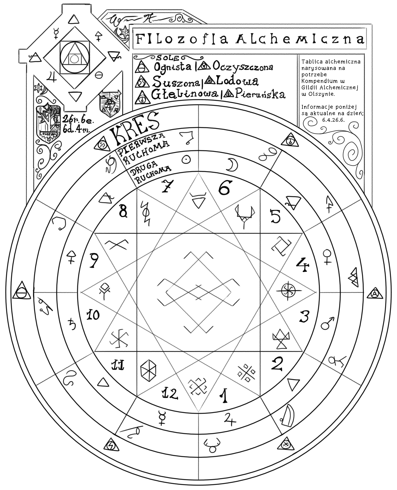

Wprowadzenie
Alchemia to nauka skupiająca się na odnajdywaniu prawd świata poprzez elementy fizyczne, które można przetworzyć. Symbolami często powtarzającymi się w Alchemii są znaki Swaroga i Velesa jako tworzenie czegoś oraz zniszczenie czegoś, co ma dać efekt przetworzenia w nowy materiał.
Mało kto wie, ale nauka o przetwarzaniu materii ma swoje korzenie w Astrologii i wiele pojęć są właśnie brane z nauki o kosmosie tak jak na przykład znaki urodzenia czy umieszczenie sfer niebieskich w świecie.
Alchemia jest jednak niejednolita i wiele filozofii doprowadziło do rozgałęzienia się tej nauki na wiele innych pomniejszych, takich jak: Alchemia Kuchenna, Zielarstwo, Alchemia Astralna, Alchemia Medyczna i Filozofia Alchemiczna.
Takich dziedzin może być jednak o wiele więcej niż tutaj wypisałem, lecz wymienione powyżej odłamy są tymi najbardziej popularnymi. Sam Alchemikiem jednak nie jestem, ale ze swoich doświadczeń w podróży jestem w stanie wam opisać i wytłumaczyć, na czym mniej więcej Alchemia polega.
Tablica Alchemiczna
Jak można zobaczyć na tabliczce, w każdej sferze widnieją symbole, a w środku okręgu znajduje się dwunastoramienna gwiazda również z symbolami.
Na środku mamy Nulę, czyli planetę, która utrzymuje wszystkie elementy na swoim miejscu. Następnie mamy dwanaście symboli bożych reprezentujących elementy naturalne, a ich kolejność zaczyna się od Kroda przy konstelacji Jelenia. Idąc w prawo, wraz ze wzrastającymi liczbami mamy: Marzannę, Viena, Nyję, Mokosz, Jarunę, Velesa, Dolę, Zorzę, Venerę, Swaroga, Peruna i na końcu znów Kroda.
Na drugiej ruchomej widnieją znaki alchemiczne, które zależnie od położenia konstelacji i soli mogą się zmienić w inne elementy naturale — czyli druga ruchoma przedstawia elementy zmienne.
My natomiast mamy symbole metali i żywiołów. Druga ruchoma przedstawia konstelacje, które zależnie od położenia na niebie wywołują inne mikstury, dlatego trzeba uważnie spoglądać w gwiazdy, aby wytworzyć chcianą miksturę.
Kres reprezentuje sole, a są one łącznikami między elementami i konstelacjami. Sole to dosłownie podstawa Alchemii i należy wyuczyć się możliwości soli w pierwszej kolejności, aby później móc zrozumieć resztę mikstur.
Podsumowanie
Tyle jestem w stanie wam o Alchemii opowiedzieć jeśli chodzi o to, co pojmuję. Jeśli pragniecie pogłębić swoją wiedzę na ten temat, waszym najlepszym strzałem będzie Gildia Alchemików. Zwykle występują w miastach od trzech tysięcy ludzi, więc nie będzie wam trudno taką znaleźć.